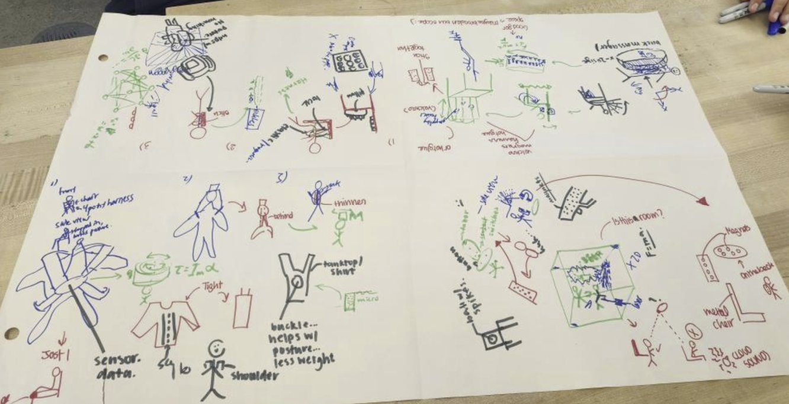
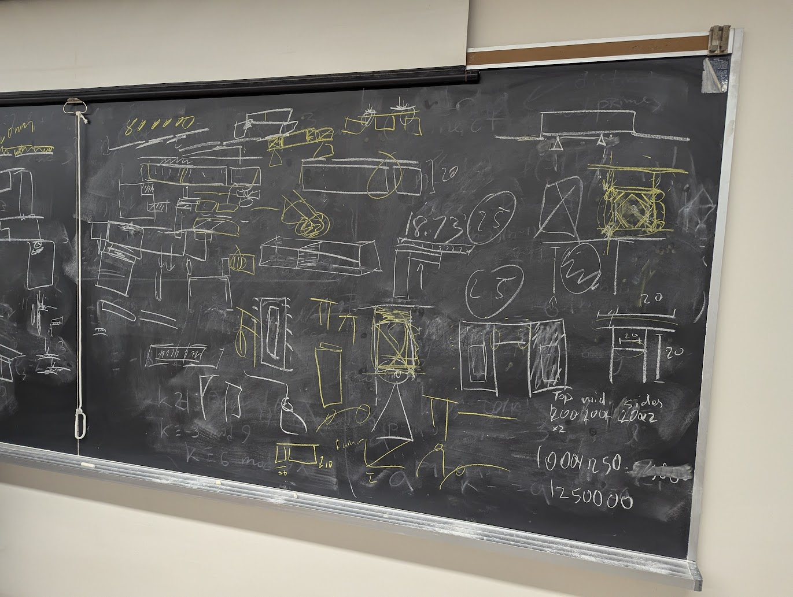

About
Welcome to my engineering design portfolio! I am a first year Engineering Science student at the University of Toronto, intending to major in Biomedical Engineering. This website was create as part of an assignment in praxis 2, an engineering design course. It acts as a record of my design work, outlining the methods, projects, and reflections that have shaped my approach. As part of the assignment, any concept, model, tool, or framework (CTMF) used is denoted by a blue box.
Engineering Position In Context
This is my previous position in context (January 2025), written as an assignment in the course Praxis II. The unconventional format was permitted and encouraged under the assignment instructions. My current position statement keeps the content of the previous iteration, but has two major changes: adding the effect of teamwork to the section on "building off past experiences", as well as adding a new section on the importance of planning.
Iterated Position Statement
In my previous position statement, I emphasised how I felt it was important to build on past experiences and designs as the cornerstone of innovation. However, through collaborative work with exceptional teammates from a variety of backgrounds, I now appreciate that the same experience can be interpreted in multiple ways. Each teammate brought a unique perspective, stemming from their individual backgrounds and priorities, whether it was an emphasis on precision, safety, cost-effectiveness, or user experience. These all stemmed from what they thought as "correct", which was in conflict with what I saw as the "correct" way to do engineering design. It is important to understand not only people's experiences and what they have learned, but also their interpretations of those experiences, because that's mostly what forms their position on engineering design. This was something that I overlooked, which lead to misunderstandings and a lack of clear direction in team projects. By communicating our positions, and more importantly why we had those positions, it made it so that teammates at least understood where everyone else was coming from, which allowed to team to work better towards a common goal.
Planning is an essential element of engineering design that I initially underestimated, viewing it as almost a potential inefficiency. However, my experience taught me that inadequate planning can lead to significant rework. One example of this was when I was making an assembly on solidworks for a camera shutter. Pins had to fit within specific hole sizes, which I did not plan ahead for. I also did not make things easy to modify, so it probably took more time to fix what I had done than if I had just planned it out to begin with. When design elements uncoordinated from the outset, valuable time is subsequently lost in revising or reconstructing what should have been accurately set up in the first place.
Moreover, in a collaborative team environment, structured planning plays a pivotal role in ensuring all members share a common understanding of project goals and constraints. It creates better communication, enabling team members to seek clarification and coordinate their contributions more effectively. Ultimately, the discipline of thorough planning not only optimizes individual workflow but also enhances overall team cohesion.
Projects
Praxis 1 Design Project
This is our design project in our first semester design course. We had to come up with a design to address an inconvenience facing first year EngScis.
The diverging process
Application in the Design Process
Tools we used included:
- 4-3-3 brainwriting: In this method, teammates sketch relevant designs, ideas, etc. but cannot say anything. The sketches are then passed to another team member, who builds on those ideas. This cycle is repeated until everyone has built on a previous idea.
- Biomimicry: In this method, we try to take inspiration from naturally occuring "designs", and how we can adapt that to our context.
- Lotus Blossom: In this method, we placed a central concept in the middle of a grid and expanded related ideas in surrounding "petals" to explore multiple dimensions of the problem.
Evidence and Analysis
From my 17 October studio reflection: Which tool produced the highest quality ideas?
I think that 4-3-3 brainwriting generated the best ideas.
Its structure encouraged divergent thinking and minimized cognitive bias, as we built
upon each other's sketches without the influence of detailed explanations.
This ambiguity allowed for broader interpretations, leading to creative, out-of-the-box developments
that would not have emerged through more rigid, "classical" diverging methods. While the biomimicry exercise provided some
ideas, its relevance was limited. Since our product focused on human ergonomics, many natural
analogies, like animals instinctively maintaining good posture, didn't really have relevance in context.
We got a few useful insights, but the overall applicability was limited. The lotus leaf method,
though conceptually interesting and new, yielded fewer novel ideas.
Because we were already deeply familiar with the design brief, we knew most of the basic insight, making it harder to
generate truly new directions within the limited timeframe of studio.

Reflection on Effectiveness and Lessons Learned
– Ambiguity is an underrated creative driver. Building on others’ partially-formed ideas encouraged collaboration and helped overcome individual mental blocks.
– Brainwriting was helpful as when I was stuck on what the next steps of a design were, or couldn't fully express my thoughts, the additions my teammates made were not only better than what I had initially thought of, but also expanded the scope of the design space.
– Biomimicry can be highly effective in the right context, especially for function-driven or environmentally inspired products. However, its relevance should be evaluated based on the scope of the design space
– The lotus blossom technique is better suited for early-stage diverging or unfamiliar problems. Its effectiveness depends on available time and the novelty of the design space.
Converging onto a final design
Application in the Design Process
We needed to converge onto a final recommended design from our initial 5 prototypes, so we had each teammate present the prototype they were most familiar with, and act as it's "advocate".
Evidence and Analysis
From my 03 October studio reflection: We selected our final design through a structured process: we evaluated each prototype against the design brief, and then voted as a team. Although our initial votes differed, this sparked a constructive dialogue where every team member actively listened and contributed. Teammates sought out active discussion instead of pushing their own ideas, and this willingness to hear new perspectives led to a deeper evaluation of each prototype. This collaborative environment not only improved our justification behind our final decision but also strengthened team dynamics.
Reflection on Effectiveness and Lessons Learned
– The discussion was very open and respectful, and it reinforced the value of creating space for all voices.
– It was also important that teammates trusted each other to act in the best interest of the team, which in this case they did.
– Going forward, I would like to build on this by listening more intentionally and approaching all ideas with equal consideration.
The Perry Model of Intellectual Development
Application in the Design Process
As a team, we experienced the Perry Model of intellectual development. Initially, we approached design challenges with the assumption that there was a single “correct” solution; like as if it were an exam question. However, as the course progressed, we began to move into a more complex stage of thinking, where we recognized that design often involves multiple valid solutions, and that authority comes from how well those solutions are justified.
Evidence and Analysis
This shift became clear during diverging and converging onto a prototype. Faced with several feasible design directions, t here was no objectively “right” choice. Instead, our team had to compare trade-offs, consider stakeholder needs, and use frameworks to support our decisions. Rather than waiting for a clear answer to emerge, our team learned to use design tools as a means of constructing and defending a rationale. This moved us from passive decision-making to informed authorship. This represented a shift from dualistic thinking ("there's a right answer") toward contextual relativism ("there are better or worse answers depending on context").
Reflection on Effectiveness and Lessons Learned
The Perry Model helped me recognize that design is not about finding the right answer; it’s about making reasoned, evidence-based decisions in uncertain conditions. It pushed me to become more confident in my judgment, not by claiming certainty, but by supporting ideas with facts. Moving forward, I want to continue developing this mindset. I should be embracing complexity and using design methods not just to create solutions, but to communicate and defend them.
Praxis 2 Design Project
This is our design project in our second semester design course. We were tasked with addressing an issue facing a community in the GTA.
Stepping away from the pyschological safety of the familiar
Application in the Design Process
In the diverging process, we used a number of unfamiliar tools or tools that we thought had no relevance to the context of our design space. These included:
- Wishing: We imagined ideal scenarios without constraints, regardless of feasibility.
- Biomimicry: In this method, we try to take inspiration from naturally occuring "designs", and how we can adapt that to our context.
- Personification: In this method, we took the perspective of the product as a sentient being.
Evidence and Analysis
From my 06 March studio reflection: Engaging with unconventional ideation tools challenged my initial biases and expanded my creative process. The “Wishing” tool (“Wouldn’t it be nice if…”) was particularly effective, encouraging bold, unrealistic ideas that sparked more feasible innovations. Without the context of this tool, we likely would have dismissed these ideas as too far-fetched. Biomimicry, though initially looking a bit misaligned with our initial industrial focus, offered unexpected insights, such as how natural sorting processes (e.g. ocean waves) could inspire more efficient systems. This helped us think beyond our initial constraints. Personification was where we, “How would it feel to be a LEGO?”. This seemed a bit abstract at first but actually provided useful perspective on the user-product interaction, highlighting considerations for ergonomics and gentle handling.
Reflection on Effectiveness and Lessons Learned
– Removing the pressure of realism early on fosters a safe space for bold thinking, which can later be refined into actionable designs.
– Even when the context seems unrelated, nature can offer useful analogies that expand the design space. This has to be balanced with previous experience of spending too much time when it clearly isn't going anywhere.
– Empathising with the product and/or user, even in abstract ways, can reveal insights often missed in purely technical analysis.
– The lotus blossom technique is better suited for early-stage diverging or unfamiliar problems. Its effectiveness depends on available time and the novelty of the design space.
The PIAA model
Application in the Design Process
A teammate encouraged the use of the PIAA model during our creative ideation phase to better engage with a variety of unfamiliar tools. We took time to intentionally think through the model if we felt like we weren't making progress.
Evidence and Analysis
In the Perceive stage, I observed my instinctive bias toward structured, practical tools and recognized my hesitation around open-ended methods like wishing or personification. Through Interpretation, I examined these reactions and understood they were rooted in a preference for feasibility and efficiency; qualities that should be less emphasized in early-stage ideation. By Assessing the actual outcomes, I realized these tools had surprising value that I didn't consider before. In the Act phase, I consciously shifted my mindset, embracing the ambiguity, participating more openly, and supporting the team in building on unconventional ideas.
Reflection on Effectiveness and Lessons Learned
Using the PIAA model helped me recognize and challenge my own biases toward "abstract" idea generation. It gave me a structured way to stay open to unfamiliar methods and to engage more intentionally in the creative process. I would still like to prioritize practicality, but this experience reminded me that strong design solutions often begin with bold, unconventional thinking. Moving forward, I’ll continue using the PIAA model to stay self-aware and to approach early ideation with a more open and balanced mindset.
The Nash Equilibrium
Application in the Design Process
The Nash Equilibrium is a situation in game theory where no individual can benefit by changing their strategy if others keep theirs unchanged.
Evidence and Analysis
As a team, we often gravitated toward familiar design approaches or tools, even when we knew that exploring more innovative or riskier options might lead to better outcomes. This created a kind of implicit equilibrium: no one pushed too far outside their comfort zone, because doing so without group buy-in felt inefficient and risky.
Reflection on Effectiveness and Lessons Learned
Recognizing this tendency helped me understand that innovation isn’t just about generating new ideas, it also requires disrupting what could be a comfortable group dynamic. While the staying put helped us move forward without conflict, it may have also limited our creative potential. In future projects, I think that it's important that I become more proactive in challenging the equilibrium when appropriate and encouraging the team to collectively explore less familiar paths, even if they feel uncertain at first.
CIV102 Bridge Design Project
This was a bridge design contest/assignment in our first year statics course, where we designed a beam bridge made out of matboard. Contest instructions and rules (download)
CRAAP test
Application in the Design Process
In performing secondary research for our design, we had to use the CRAAP (Currency, Relevance, Authority, Accuracy, and Purpose) test to determine the validity and usefulness of secondary sources.
Evidence and Analysis
– Currency: We didn't really prioritze recent sources, since much of the knowledge on civil engineering relevant to us hasn't changed much recently.
- Relevance: Sources were selected based on if they addressed lightweight structural design, small-scale modeling, and material behavior relevant to matboard.
- Authority: We looked for reputable authors or organizations, such as academic journals, engineering education sites (ending in .edu for example)
- Accuracy: We cross-checked technical claims when possible and looked for sources that cited data, diagrams, or analysis.
- Purpose: We assessed whether the information was intended to inform objectively or to promote a product or opinion.
Reflection on Effectiveness and Lessons Learned
While the CRAAP Test helped us filter out low-quality or irrelevant information, one of the biggest challenges was assessing accuracy. With relatively limited technical knowledge, it was sometimes a bit hard to judge whether certain claims were reliable or oversimplified. As well, assessing the relevance of some sources was difficult since we didn't understand some math. This experience highlights the importance of cross-referencing multiple sources and having a strong background in order to be able to actually be able to use the CRAAP test effectively.
Representations of prototypes
Application in the Design Process
Evidence and Analysis
 To better illustrate their point, a teammate used a combination of hand-drawn sketches and CAD modeling to clearly communicate their design proposal. This approach not only clarified their thinking but also helped align the team’s understanding and visualisation; something that was especially valuable early in the design process. They started with rough freehand sketches, outlining the basic structure of the cross section. These were quick, but very well annotated with notes that helped explain their reasoning.
Reflection on Effectiveness and Lessons Learned
Their use of visual tools significantly improved team communication. The sketches enabled fast iteration, while the CAD model gave us confidence in moving forward with construction, since the structure was not only well-conceived but also well-documented. This shows the value of visual communication in prototyping and representation. Starting with quick sketches can help generate feedback early, while CAD modeling can solidify and validate ideas.
The rhetorical triangle
Application in the Design Process
We used the rheotrical triangle to try to convey our ideas and why we thought they were best.
Evidence and Analysis
Ethos: We built ethos by grounding our design choices in research and engineering principles from reliable sources. Pathos: While engineering is logic-driven, we also used pathos to engage each other and encourage a good sense of team comraderie, which helped us work together. Logos: Logic was central in our decision making, by choosing the best design choices possible.
Reflection on Effectiveness and Lessons Learned
Applying the rhetorical triangle helped me realize that effective design is not just about technical accuracy it’s also about how well I can work together. My arugements may be technically sound, but I need to have pathos in order for the best team dynamic to come into play.